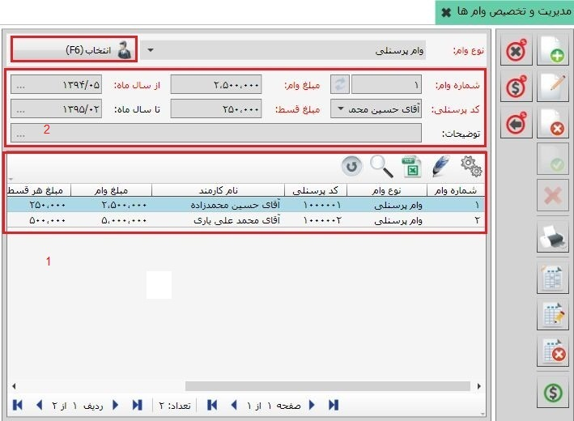
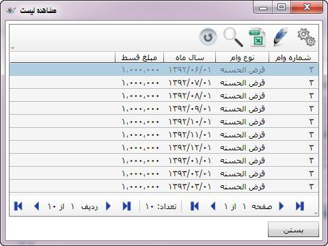

ایجاد وام جدید (F8):
برای ایجاد وام جدید، ابتدا نام کارمند مورد نظر را در فیلد کارمند انتخاب کنید و پس از تایید نام وی روی این گزینه کلیک کنید تا فرم ایجاد وام باز شود.
ایجاد وام جدید (F8):
برای ایجاد وام جدید، ابتدا نام کارمند مورد نظر را در فیلد کارمند انتخاب کنید و پس از تایید نام وی روی این گزینه کلیک کنید تا فرم ایجاد وام باز شود.
قبلا گفته شد که می توانید وام پرداختی به کارکنان را در سیستم حقوق و دستمزد ثبت کنید و سند پرداخت وام قابلیت صدور از سیستم حقوق و دستمزد را دارا می باشد. برای ثبت وام برای هر یک از کارکنان از بخش «کاربردهای ویژه» روی منوی «مدیریت و تخصیص وام ها» کلیک کنید تا صفحه مربوط به آن باز شود. در ابتدا صفحه مدیریت و تخصیص وام ها به شکل زیر نمایش داده می شود:

در شکل بالا مشاهده می کنید که بیشتر فیلدهای این صفحه غیر فعال است و تنها فیلد نوع وام و گزینه مقابل آن (تایید و مشاهده) قابلیت انتخاب دارد. در فیلد نوع وام ، لیست وام های تعریف شده در منوی معرفی انواع وام ها قرار دارد. برای ثبت وام برای یک شخص، ابتدا در فیلد نوع وام ،وام مورد نظرتان را انتخاب نمایید و سپس روی گزینه «تایید و مشاهده» کلیک کنید، در این صورت صفحه مدیریت وام ها فعال شده و وام های ثبت شده برای کارمندان نمایش داده می شود. همچنین ابزار موجود در نوار سمت راست صفحه نیز فعال می گردد:
در شکل بالا مشاهده می کنید که با تایید نوع وام انتخاب شده لیست پرسنلی که این وام را دریافت کرده اند در جدول مشخص شده با شماره 1 نمایش داده می شود. همچنین با انتخاب هر ردیف از لیست وام ها، مشخصات آن وام در قسمت شماره 2 به نمایش در می آید که شامل اطلاعاتی چون مبلغ وام، نوع وام، مبلغ هر قسط، سال ماه اول و سال ماه پایان اقساط وام که پس از قسط بندی وام مشخص می شود می باشد. همچنین دقت داشته باشید که با تایید نوع وام در بالای صفحه، کلید «تایید و مشاهده» به کلید «انتخاب» تبدیل شده است، بنابراین برای مشاهده وام های دیگر نیز باید این بار گزینه انتخاب را بزنید تا بتوانید وام مورد نظرتان مورد نظرتان را انتخاب و تایید نمایید.
در سمت راست صفحه «مدیریت و تخصیص وام ها» ابزاری قرار داده شده است که با استفاده از آن ها می توانید روی وام های ثبت شده برای هر کارمند عملیاتی انجام دهید یا اینکه یک وام جدید برای کارمند انتخاب نمایید. در ادامه به کاربرد هر یک از این ابزار در این صفحه می پردازیم:
ایجاد وام جدید (F8):
برای ایجاد وام جدید، ابتدا نام کارمند مورد نظر را در فیلد کارمند انتخاب کنید و پس از تایید نام وی روی این گزینه کلیک کنید تا فرم ایجاد وام باز شود.
در صفحه شکل بالا می توانید اطلاعات وام جدید را وارد نمایید. شماره وام به صورت اتوماتیک به ترتیب کلیه وام های ثبت شده در سیستم شماره گذاری می شود، اما می توانید شماره وام را در صورتی که با شماره سایر وام ها یکی نباشد به صورت دلخواه تغییر دهید. در فیلد از سال ماه اول ماه اولین قسط وام را نشان می دهد که به صورت خودکار ماه ثبت وام درج می شود، اگر قرار باشد اقساط وام از ماه دیگری آغاز شود، همان ماه را در این فیلد انتخاب کنید.(تا سال ماه پایان غیر فعال می باشد و بعد از قسط بندی وام مقداردهی می شود.) فیلد کد پرسنلی شامل لیست کارمندانی است که قبلا در معرفی کارمندان تعریف کرده بودید، مبلغ هر قسط را نیز در فیلد مربوطه وارد نمایید و سپس گزینه ثبت را بزنید تا وام مورد نظر ایجاد شود.
 ثبت وام (Ctrl+Enter):
این گزینه در صفحه ایجاد وام و یا هنگام ویرایش وام ثبت شده فعال می گردد و از آن برای ثبت وام ایجاد شده استفاده می شود. پس از ثبت وام سند پرداخت آن باز می شود که در شکل زیر مشاهده می کنید:
ثبت وام (Ctrl+Enter):
این گزینه در صفحه ایجاد وام و یا هنگام ویرایش وام ثبت شده فعال می گردد و از آن برای ثبت وام ایجاد شده استفاده می شود. پس از ثبت وام سند پرداخت آن باز می شود که در شکل زیر مشاهده می کنید:
همان طور که مشاهده می کنید شکل بالا سند خزانه مربوط به پرداخت وام می باشد. توسط کادرهای قرمز مشخص شده است که نام عملیات «پرداخت وام» درج شده و شخص سند نیز همان کارمند صاحب وام می باشد. برای سند فوق محل عملیات را مشخص کنید و در قسمت عامل نیز عاملی را که نحوه پرداخت وام را به کارمند نشان می دهد انتخاب نمایید. پس تکمیل کامل سند پرداخت وام، آن را ثبت نمایید، طبق تنظیماتی که قبلا انجام داده اید پس از ثبت سند فوق سند حسابداری آن نیز به صورت اتوماتیک صادر می شود. پس از ثبت سند پرداخت وام می توانید وام را قسط بندی کنید که در ادامه توضیح داده می شود.
 ویرایش این وام (F2):
این گزینه پس از ثبت وام فعال می گردد و با استفاده از آن می توانید وام ایجاد شده را ویرایش کنید.
ویرایش این وام (F2):
این گزینه پس از ثبت وام فعال می گردد و با استفاده از آن می توانید وام ایجاد شده را ویرایش کنید.
 حذف این وام (F9):
این گزینه نیز پس از ثبت وام فعال می گردد و برای حذف وام ثبت شده استفاده می شود.
حذف این وام (F9):
این گزینه نیز پس از ثبت وام فعال می گردد و برای حذف وام ثبت شده استفاده می شود.
 انصراف (Ctrl+F2):
گزینه انصراف قبل از ثبت وام یا در زمان ویرایش وام فعال می باشد که برای انصراف از ثبت یا انصراف از ویرایش به کار می رود.
انصراف (Ctrl+F2):
گزینه انصراف قبل از ثبت وام یا در زمان ویرایش وام فعال می باشد که برای انصراف از ثبت یا انصراف از ویرایش به کار می رود.
 چاپ (Ctrl+P):
پس از ثبت وام و قسط بندی وام می توانید با استفاده از گزینه چاپ، وام ثبت شده را به همراه تاریخ اقساط آن چاپ نمایید.
چاپ (Ctrl+P):
پس از ثبت وام و قسط بندی وام می توانید با استفاده از گزینه چاپ، وام ثبت شده را به همراه تاریخ اقساط آن چاپ نمایید.
 ثبت سند تسویه:
در صورتی که قبلا سند پرداخت وام را ثبت نکرده و آن را لغو کرده باشید، با انتخاب این گزینه سند پرداخت وام باز می شود و شما می توانید آن را تکمیل و ثبت نمایید. اگر قبلا برای وام ثبت شده سند پرداخت صادر کرده باشید با انتخاب گزینه پرداهت پیغام زیر نمایش داده می شود:
ثبت سند تسویه:
در صورتی که قبلا سند پرداخت وام را ثبت نکرده و آن را لغو کرده باشید، با انتخاب این گزینه سند پرداخت وام باز می شود و شما می توانید آن را تکمیل و ثبت نمایید. اگر قبلا برای وام ثبت شده سند پرداخت صادر کرده باشید با انتخاب گزینه پرداهت پیغام زیر نمایش داده می شود:

در صورتی که بخواهید سند پرداخت جدیدی برای وام مورد نظر ثبت کنید گزینه بله و در غیر این صورت گزینه خیر را انتخاب نمایید.
 نمایش سند تسویه:
اگر قبلا برای وام سند پرداخت ثبت کرده باشید با زدن این گزینه می توانید سند پرداخت را مشاهده و در صورت نیاز ویرایش نمایید.
نمایش سند تسویه:
اگر قبلا برای وام سند پرداخت ثبت کرده باشید با زدن این گزینه می توانید سند پرداخت را مشاهده و در صورت نیاز ویرایش نمایید.
 حذف سند تسویه:
از این گزینه برای حذف سند تسویه ثبت شده استفاده می گردد.
حذف سند تسویه:
از این گزینه برای حذف سند تسویه ثبت شده استفاده می گردد.
 محاسبه اقساط:
پس از ثبت وام و صدورسند پرداخت، می توانید وام ثبت شده را قسط بندی کنید. به این منظور می توانید از گزینه محاسبه اقساط استفاده نمایید. با انتخاب این گزینه پیغام زیر ظاهر می شود:
محاسبه اقساط:
پس از ثبت وام و صدورسند پرداخت، می توانید وام ثبت شده را قسط بندی کنید. به این منظور می توانید از گزینه محاسبه اقساط استفاده نمایید. با انتخاب این گزینه پیغام زیر ظاهر می شود:

همچنین با تایید پنجره فوق پنجره دیگری باز می شود که به شکل زیر است:

 حذف اقساط:
با انتخاب این گزینه می توانید اقساط محاسبه شده مربوط به وام انتخاب شده را حذف نمایید.
حذف اقساط:
با انتخاب این گزینه می توانید اقساط محاسبه شده مربوط به وام انتخاب شده را حذف نمایید.
مشاهده اقساط: از این طریق می توانید اقساط مربوط به وام انتخاب شده از جدول سمت چپ صفحه تخصیص وام را مشاهده نمایید. با زدن این گزینه پنجره زیر نمایش داده می شود که شامل لیست اقساط وام می باشد.

 انتقال اقساط:
با استفاده از این گزینه می توانید اقساط مورد نظرتان را به ماه های دیگری انتقال دهید. پس از انتخاب گزینه انتقال اقساط پنجره زیر نمایش داده می شود:
انتقال اقساط:
با استفاده از این گزینه می توانید اقساط مورد نظرتان را به ماه های دیگری انتقال دهید. پس از انتخاب گزینه انتقال اقساط پنجره زیر نمایش داده می شود:

در شکل بالا فیلد هایی قرار دارند که می توانید آن ها را طبق توضیحات زیر ثبت کنید:
از سال ماه: در این قسمت سال ماهی را که نمی خواهید شامل اقساط وام باشد یعنی سال ماهی که قرار است به ماه دیگر انتقال یابد را انتخاب نمایید.
به سال ماه: در این فیلد سال ماه مقصد که قرار است قسط وام به آن منتقل شود درج می شود. به صورت پیش فرض ماه بعد از ماه پایان اقساط در این قسمت قرار دارد که می توانید آن را تغییر دهید.
مبلغ: در این قسمت نیز مبلغ هر قسط قرار می گیرد که قابل ویرایش است.
پس از تنظیم هر سه گزینه فوق، قسط مورد نظر به سال ماه مقصد منتقل می شود.